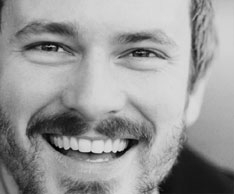

Monologkurs med Aslak Moe og Toril Solvang - 7-10 kursdager FULLT-venteliste
- Dato:
- 15.10.2013 til 15.11.2013
- Start kl :
- 10:00
- Slutt kl :
- 16:00
- Adresse:
- Norsk Skuespillersenter, Welhavensgate 1, Oslo
 Regissør Aslak Moe og dramatiker Toril Solvang har lenge pratet om å jobbe sammen - nå skal de lede monologkurs på Skuespillersenteret!
{kind=link}
Skriv din egen monolog!
"Vi er en dramatikerinstruktør og en instruktørdramatiker som interesserer oss for deg og for virkeligheten i samtiden.
Sammen med deg og de andre på kurset vil vi dyrke frem monologer som dere kan betrakte som deres egne, egnet for dere og som viser dere som skuespillere på en spesifikk måte.
Vi kommer til å bruke forskjellige innfallsvinkler og metoder for å få
frem og raffinere stoffet, så ikke tenk "jeg er ikke noen skribent"
eller "det blir ikke noe av" - vi hjelper deg, og det blir noe av.
Vi kommer til en viss grad å la stoffet sirkulere mellom dere, så det
er ikke nødvendigvis sånn at du ender opp med noe du selv har skrevet,
det kan likså godt være en av de andre på kurset, en av oss, en
kombinasjon eller noen helt andre som har skrevet det. Kanskje var det
ikke engang myntet på fremføring til å begynne med.
På dette kurset kommer du til å få muligheten til å prøve ut
forskjellige monologstrategier, helt til du kommer frem til en monolog
du digger og som passer deg som hånd i hanske.
Ja, skulle du få lyst til å fremføre en allerede skrevet monolog, er
selv ikke det forbudt. Men i hovedsak er dette et kurs for dem som har
lyst på nye, skreddersydde monologer!
Hilsen Toril Solvang og Aslak Moe"
Kursdager
Det er satt opp 10 kursdager. Det legges opp til både gruppearbeid og individuell veiledning fra Toril og Aslak. Derfor behøver du ikke være til stede alle de ti dagene, men du må kunne være til stede minst 7-8 dager, og du må komme på de dagene som er obligatoriske.
Tirsdag 15. oktober 10.00 - 16.00 (oppstart, obligatorisk)
Tirsdag 22. oktober 10.00 - 16.00
Tirsdag 29. oktober 10.00 - 16.00
Tirsdag 5. november 10.00 - 16.00
Lørdag 9. november 10.00 - 16.00
Søndag 10. november 10.00 - 16.00
Tirsdag 12. november 10.00 - 16.00 (obligatorisk)
Onsdag 13. november - 10.00 - 16.00 (felles) / 17.00 - 22.00 (individuelt arbeid)
Torsdag 14. november 10.00 - 16.00 (felles) / 17.00 - 22.00 (individuelt arbeid)
Fredag 15. november - generalprøve på ettermiddagen, Monologbonanza 22.30
Monologbonanza
Monologurset munner ut i Monologbonanza i Bikuben på Det Norske Teatret kl. 22:30 den 15. november. Det er frivillig om man vil være med på visningen.
Aslak Moe er regissør, dramatiker og dramaturg. Han er utdannet fra Statens Teaterskole i København, og har regissert for institusjonsteatre og frie grupper i Norge, Sverige og Danmark. I 2011 var han dramaturg for Rimini Protokoll (Tyskland) i et samarbeidsprosjekt med Nationaltheatret og Dramatikkens Hus. Han har jobbet innenfor en rekke sjangre, inkludert film, radioteater, konsertforestillinger, virkelighetsbasert teater og monologforestillinger.
 Toril Solvang er utdannet dramatiker ved Dramatiska Institutet i Stockholm og har studert dramaturgi ved Universitetet i Århus. Hun jobber også som regissør og har blant annet regissert Linus og Sirkusfuglene av Nina Wester og flere egne tekster. Hun er interessert i dokumentarisk og personlig materiale, og i Det Stykke Natt jobbet hun ut fra intervjuer med prostituerte og sexkunder. I performancen I much prefer being able to see the eyes, var materialet e-poster og smser. Hun har dramatisert Levi Henriksens novelle Vinteropplag sammen med Jonas Delerud.
Toril Solvang er utdannet dramatiker ved Dramatiska Institutet i Stockholm og har studert dramaturgi ved Universitetet i Århus. Hun jobber også som regissør og har blant annet regissert Linus og Sirkusfuglene av Nina Wester og flere egne tekster. Hun er interessert i dokumentarisk og personlig materiale, og i Det Stykke Natt jobbet hun ut fra intervjuer med prostituerte og sexkunder. I performancen I much prefer being able to see the eyes, var materialet e-poster og smser. Hun har dramatisert Levi Henriksens novelle Vinteropplag sammen med Jonas Delerud.
Hvorfor gratis?
Ettersom kurset avsluttes med opptreden på Bikuben, er deltakelse helt gratis. Det er frivillig om man vil opptre.